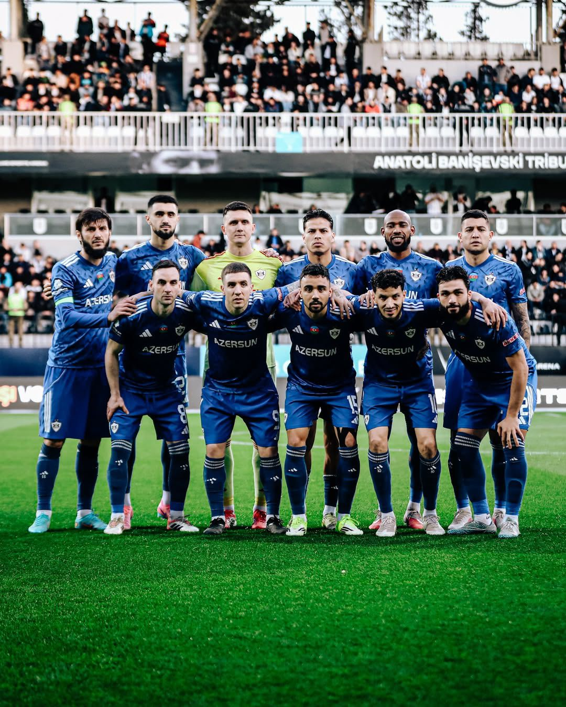

Ülkemizin Gururu
Qarabağ Futbol Klubu
📜 Tarihçe ve "İmarət" Ruhu
1951 yılında Ağdam'da kurulan Qarabağ FK, Azerbaycan futbolunun en başarılı ve ilham verici kulüplerinden biridir. Karabağ savaşı nedeniyle Ağdam'daki efsanevi İmarət Stadyumu'nu terk etmek zorunda kalsa da, küllerinden doğarak maçlarını Bakü'de oynamaya başlamıştır. "Məcburi Köçkün" (Zorunlu Göçmen) statüsünden çıkıp Avrupa'nın zirvesine uzanan bu hikaye, Qarabağ'ı sadece bir futbol takımı değil, aynı zamanda ulusal bir kimlik ve gurur sembolü haline getirmiştir. Taraftarlar arasında "Köhlənlər" lakabıyla anılır.
🏆 Başarılar ve Avrupa Fatihi
Avrupa Arenası
Azerbaycan futbol tarihinde UEFA Şampiyonlar Ligi gruplarına kalmayı başaran ilk kulüptür. Avrupa Ligi'nde sayısız kez boy göstererek Avrupa devlerine karşı unutulmaz zaferler kazanmıştır.
Yerel Dominasyon
Azerbaycan Premyer Liqası'nda kurduğu büyük ambargo ile kırılması zor rekorlara imza atmıştır. Üst üste kazanılan lig şampiyonlukları ile ülkenin tartışmasız en büyük futbol gücüdür.
🧠 Qurban Qurbanov Dönemi
Takımın bu inanılmaz yükselişinin arkasındaki baş mimar, efsanevi teknik direktör Qurban Qurbanov'dur. 2008 yılından bu yana takımın başında olan Qurbanov, Qarabağ'a sadece kupalar kazandırmakla kalmamış; disiplinli, modern ve göze hoş gelen futboluyla tüm Avrupa'nın saygısını kazanmıştır.